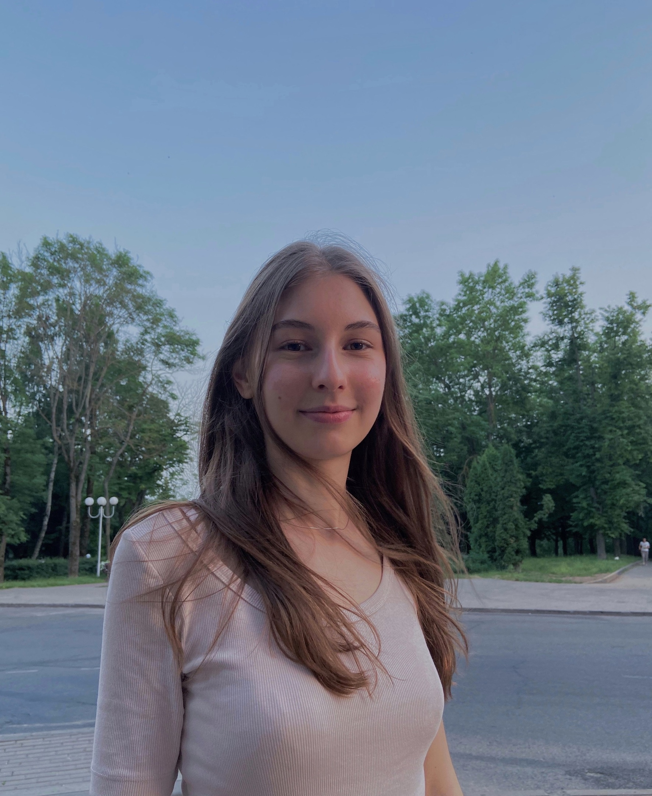
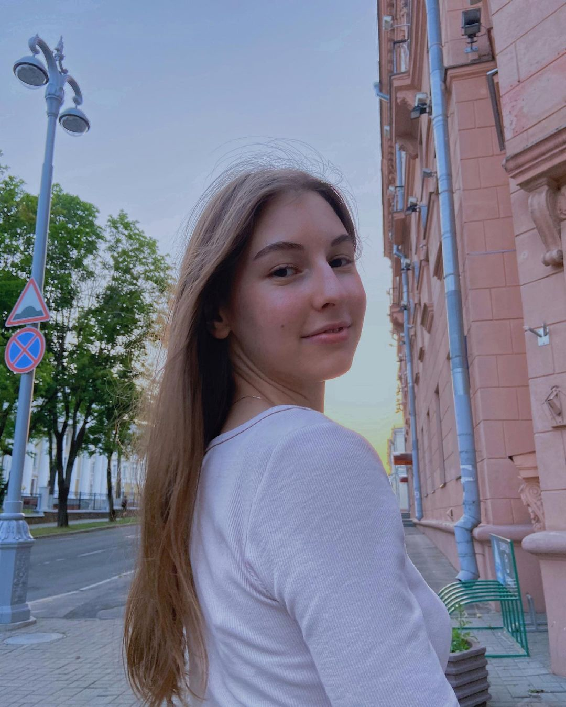
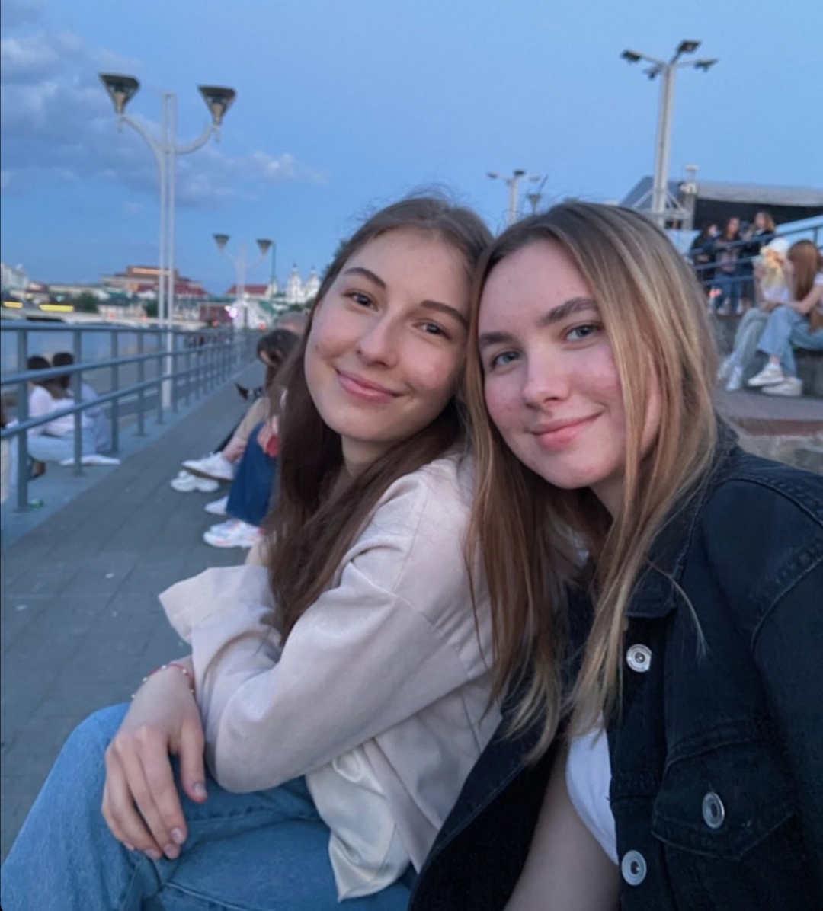
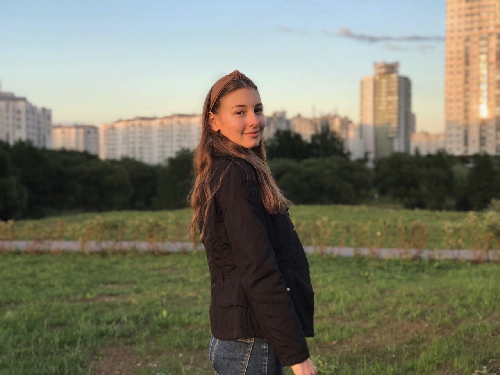
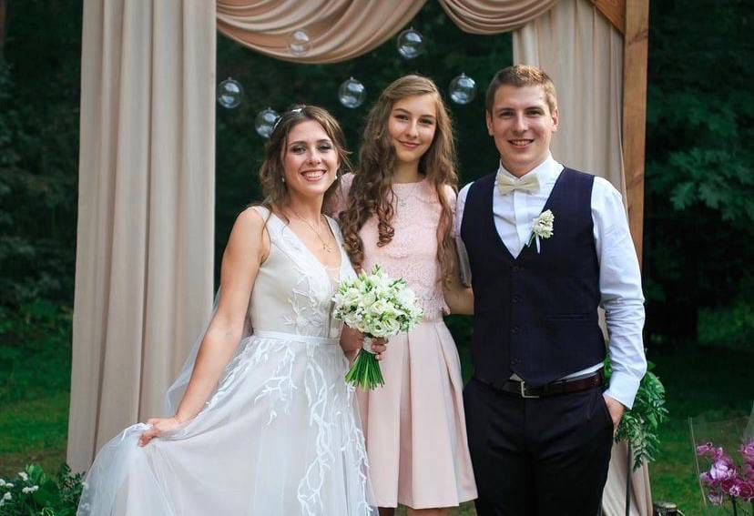
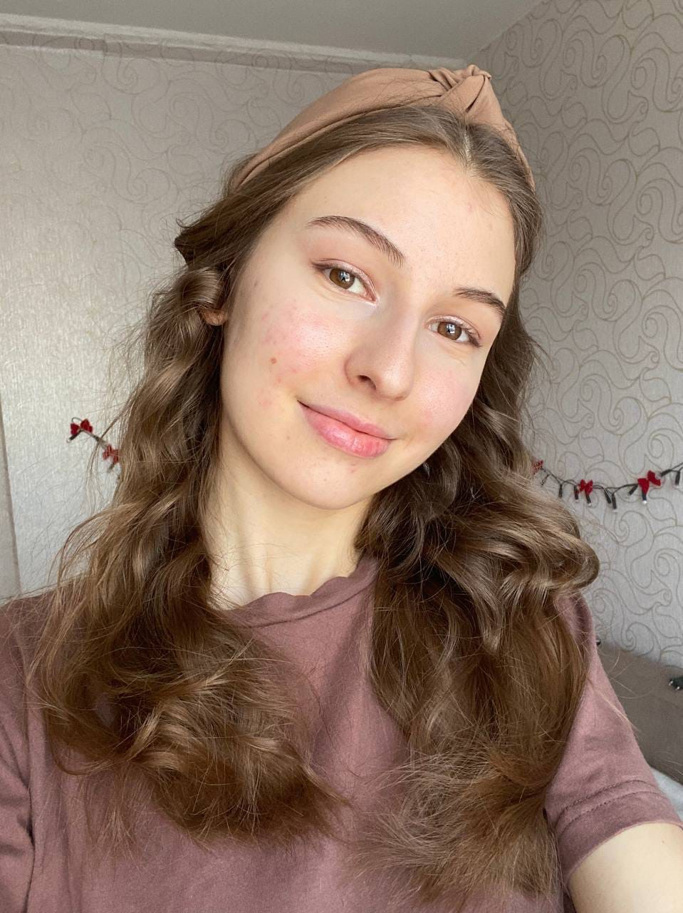
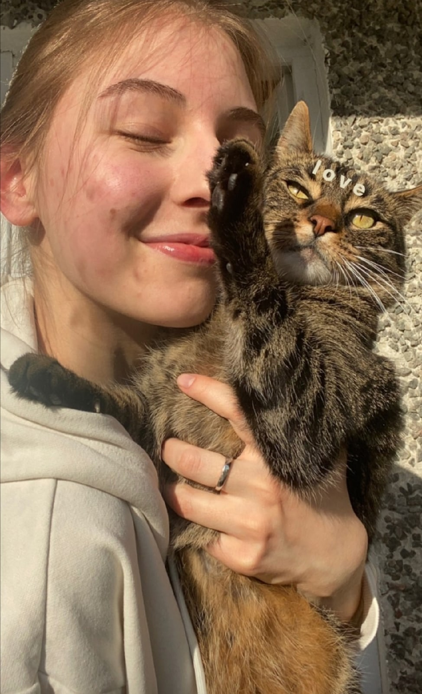
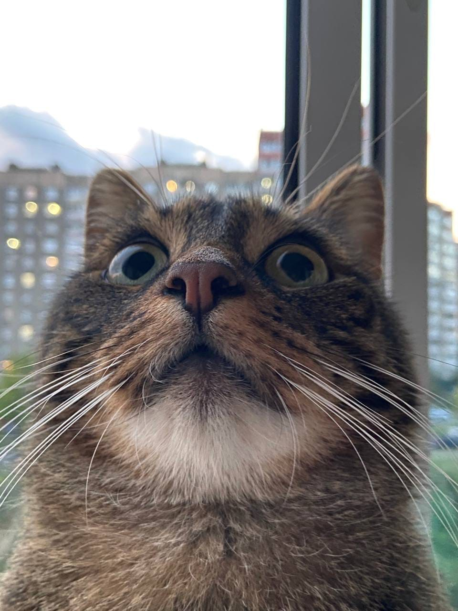
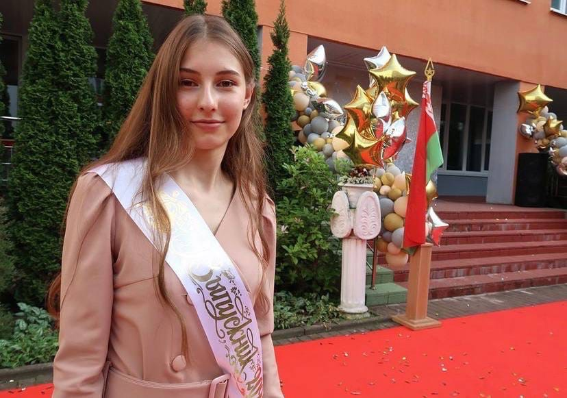

Соня родилась 23 января в городе Минске.
Софья
Залесская
Залесская




Она окончила 13 гимназию Минска. Школе она благодарна за друзей, которых она ей подарила, и моменты, которые она пережила вместе с друзьями.

Есть старший брат Илья. Ему 27, работает адвокатом, поэтому победить его в споре практически невозможно. Он всегда был для Сони примером доброты и здравого рассудка. С двоюродной сестрой Марией у Сони очень близкие отношения. С рождения они неразлучны, до определённого возраста многие их даже не различали.

Большая страсть - музыка. В детстве Соня играла на скрипке, занималась вокалом. Сейчас люблит все, что с этим связано.
Ещё одна моя любовь - Финик. Завести кота было мечтой всей её жизни. Для неё он больше, чем просто кот. Он действительно член семьи.


Люди представляют большую ценность в жизни Сони, поэтому ближайшим окружением она очень дорожит. В принципе, ей интересна тема человеческих отношений, поэтому любимые книги - по психологии. В общем, Соня открытый и искренний человек)
